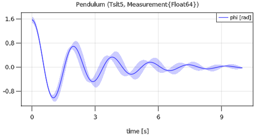
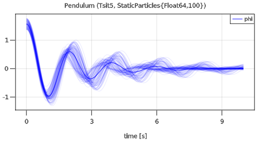

Modia Tutorial
1 Getting started
This tutorial gives an overview of package Modia to construct component-based and equation-based models with the Modia language on a high level, symbolically transforming these models into ODEs (Ordinary Differential Equations in state space form), simulating them and plotting result variables.
All examples in this tutorial can be executed with include("$(Modia.path)/examples/Tutorial.jl")
A simple differential equation with $x(t) \in \R$
\[T \cdot \frac{dx}{dt} + x = 1; \;\;\; x(t_0) = 0.2\]
can be defined, simulated and plotted with the following commands:
using Modia, ModiaPlot
# Define model
SimpleModel = Model(
T = 0.4,
x = Var(init=0.2),
equation = :[T * der(x) + x = 1],
)
# Transform to ODE form
simpleModel = @instantiateModel(SimpleModel)
# Simulate with a default integrator of DifferentialEquations
simulate!(simpleModel, stopTime = 1.2)
# Simulate with a specific integrator (Tsit5) and use a unit for stopTime
simulate!(simpleModel, Tsit5(), stopTime = 1.2u"s")
# Produce a line plot with GLMakie
plot(simpleModel, ("x", "der(x)"), figure=1)A model is defined with a constructor Model taking a comma separated list of name/value pairs. The model consist of a definition of a parameter T with default value 0.2. Constructor Var with an init key is used to define the initial condition 0.2 of the state x, and one equation. Equations can have a Julia expression on both sides of the equal sign and are given as a quoted array expression :[ ] assigned to a unique identifier such as equation.
Macro @instantiateModel(..) symbolically processes the model, in particular solves the equation for the derivative der(x), so the following equation will be used by the integrator:
\[\frac{dx}{dt} = (1 - x) / T\]
Furthermore, a Julia function is generated and compiled to evaluate this equation. @instantiateModel(..) returns an instance containing all the information needed for the further steps.
The first simulate! function performs one simulation with an integrator of package DifferentialEquations.jl, that this package automatically selects. The second simulate! call defines the integrator as second argument. Integrator Tsit5 is an adaptive Runge-Kutta method of order 5/4 from Tsitouras. There are > 100 ODE integrators provided. For details, see here. The simulation result is stored inside simpleModel.
Function call plot(..) (or ModiaPlot.plot(..)) produces a line plot. Variables to be plotted are defined as tuples or arrays of variable names. Tuples are displayed in one diagram. A Vector or matrix of tuples or strings are displayed as vector or matrix of diagrams. The result from the above example is:

using Modia exports all exported symbols from
2 Modeling
2.1 Equation oriented models
A low pass filter block with input u and output y
\[\begin{aligned} T \cdot \frac{dx}{dt} + x &= u\\ y &= x \\ x(t_0) &= 0 \end{aligned}\]
can be defined as:
using Modia
LowPassFilter = Model(
T = 0.2,
u = input,
y = output | Var(:x),
x = Var(init=0),
equation = :[T * der(x) + x = u],
)The symbols input and output refer to predefined variable constructors to define the input and output variables. If an equation has just a unique variable in the left hand side, y, the right hand side can be given as a quoted expression in a Var-constructor Var(:x) after the output constructor combined with the merge operator, |, see below.
2.2 Merging models
It is possible to combine models by merging. If we want to change the model to become a highpass filter, an alternative output equation
\[y = -x + u\]
is defined in an anonymous model Model( y = :(-x + u) ). This anonymous model is merged with LowPassFilter using the merge operator |:
HighPassFilter = LowPassFilter | Model( y = :(-x + u) )The merging implies that the output property of y is kept, but the binding expression is changed from :x to :(-x + u).
In general, recursive merging is desired and Modia provides a mergeModels function for that (see appendix A.3 MergeModels algorithm). This function is invoked as a binary operator | (also used for merge in Python). Note, that the order of the arguments/operands are important.
Generalizing the block to have two outputs for both low and high pass filtering would be done as follows:
LowAndHighPassFilter = LowPassFilter | Model(
y = nothing,
low = output | Var(:x),
high = output | Var(:(-x + u)),
)The equation for y is removed by "assigning" nothing and two variables are defined and declared as outputs.
Model LowAndHighPassFilter represents the following equations:
\[\begin{aligned} T \cdot \frac{dx}{dt} + x &= u\\ low &= x \\ high &= -x + u \\ x(t_0) &= 0 \end{aligned}\]
By turning on logging of merging setLogMerge(true), the translator gives the log:
Adding: value = :(x)
Adding: value = :(-x + u)
Deleting: y
Adding: low = Var(
output = true,
value = :(x),
),
Adding: high = Var(
output = true,
value = :(-x + u),
),The resulting model is pretty printed by calling @showModel LowAndHighPassFilter:
LowAndHighPassFilter = Model(
T = 0.2,
u = Var(
input = true,
),
x = Var(
init = 0.0 V,
),
equations = :([T * der(x) + x = u]),
low = Var(
output = true,
value = :(x),
),
high = Var(
output = true,
value = :(-x + u),
),
),2.3 Functions and tables
In order to test an input/output block as defined in the previous section, an input needs to be defined. This can be made by adding an equation for u. Assume we want u to be sinousoidial with an increasing frequency:
TestLowAndHighPassFilter = LowAndHighPassFilter | Model(
u = :(sin( (time+1u"s")*u"1/s/s" * time)*u"V"),
x = Var(init=0.2u"V")
)time is a reserved name for the independent variable. It has unit s for seconds. The Julia package Unitful provides a means for defining units and managing unit inference. It need not be explicitly defined, because its symbols are exported by using Modia. Definition of units is done with a string macro u"...". In this case, the input signal was given unit Volt. The state x must then also have consistent unit, that is Volt. If the model equations contain systems of simultaneous equations, then approximate guess values, optionally with units, must be given start: i = Var(start=0.0u"A").
The input signal can also be defined by interpolation in a table:
using Interpolations
table = CubicSplineInterpolation(0:0.5:2.0, [0.0, 0.7, 2.0, 1.8, 1.2])
TestLowAndHighPassFilter2 = TestLowAndHighPassFilter | Map(u = :(table(time*u"1/s")*u"V"))A function cannot return more as one variable and a function cannot modify one of its arguments:
equations = :[
(y1, y1) = fc1(u1,u2) # Error: Two return arguments
fc2!(u,y) # Error: Not known that fc2! computes y
println("This is a test") # Fine
]The first issue can be fixed by rewriting the function call:
equations = :[
v = fc1(u1,u2)
y1 = v[1]
y2 = v[2]
]2.4 Hierarchical modeling
Sofar, the composition of models have resulted in named tuples with values being numeric values or quoted expressions. Hierarchical models are obtained if the values themself are named tuples. A model with two filters can, for example, be defined as follows:
TwoFilters = (
high = HighPassFilter,
low = LowPassFilter,
)Note, that the previous definitions of HighPassFilter and LowPassFilter was used instead of making the defintions inline.
A band pass filter is a series connection of a high pass filter and a low pass filter and can be described as:
BandPassFilter = (
u = input,
y = output,
high = HighPassFilter | Map(T=0.5, x=Var(init=0.1u"V")),
low = LowPassFilter | Map(x=Var(init=0.2u"V")),
equations = :[
high.u = u,
low.u = high.y,
y = low.y]
)A new input has been defined which is propagated to high.u. The series connection itself is obtained by the equation low.u = high.y. Note, that dot-notation is allowed in equations.
The input and output for the BandPassFilter when using the same input definition as for the TestLowPassFilter
TestBandPassFilter = BandPassFilter | Map(
u = :(sin( (time+1u"s")*u"1/s/s" * time)*u"V")
)
bandPassFilter = @instantiateModel(TestBandPassFilter)
simulate!(bandPassFilter, Tsit5(), stopTime = 50u"s")
plot(bandPassFilter, ["u", "y"], figure=2)is shown below:

The above examples are available in file SimpleFilters.jl.
2.5 Physically oriented modeling
Sofar, only signal flow modeling has been used, i.e. input/output blocks coupled with equations between outputs and inputs. For object oriented modeling more high level constructs are neccessary. Coupling is then acausal and involves potentials such as electric potential, positions, pressure, etc. and flows such as electric current, forces and torques and mass flow rate.
2.5.1 Connectors
Models which contain any flow variable, i.e. a variable having an attribute flow=true, are considered connectors. Connectors must have equal number of flow and potential variables, i.e. variables having an attribute potential=true, and have matching array sizes. Connectors may not have any equations. An example of an electrical connector with potential (in Volt) and current (in Ampere) is shown below.
Pin = Model( v = potential, i = flow )potential is a shortcut for Var(potential=true) and similarly for flow.
2.5.2 Components
Components are declared in a similar ways as blocks. However, the interfaces between components are defined using connector instances.
An electrical resistor can be descibed as follows:
Resistor = Model(
R = 1.0u"Ω",
p = Pin,
n = Pin,
equations = :[
0 = p.i + n.i
v = p.v - n.v
i = p.i
R*i = v ]
)2.5.3 Inheritance
Various physical components sometimes share common properties. One mechanism to handle this is to use inheritance. In Modia, merging is used.
Electrical components such as resistors, capacitors and inductors are categorized as oneports which have two pins. Common properties are: constraint on currents at the pins and definitions of voltage over the component and current through the component.
OnePort = Model(
p = Pin,
n = Pin,
partialEquations = :[
0 = p.i + n.i
v = p.v - n.v
i = p.i ] )Having such a OnePort definition makes it convenient to define electrical component models by merging OnePort with specific parameter definitions with default values and equations:
Resistor = OnePort | Model( R = 1.0u"Ω", equation = :[ R*i = v ], )
Capacitor = OnePort | Model( C = 1.0u"F", v=Map(init=0.0u"V"), equation = :[ C*der(v) = i ] )
Inductor = OnePort | Model( L = 1.0u"H", i=Map(init=0.0u"A"), equation = :[ L*der(i) = v ] )
ConstantVoltage = OnePort | Model( V = 1.0u"V", equation = :[ v = V ] )The merged Resistor is shown below:
Resistor = Model(
p = Model(
v = Var(
potential = true,
),
i = Var(
flow = true,
),
),
n = Model(
v = Var(
potential = true,
),
i = Var(
flow = true,
),
),
partialEquations = :([v = p.v - n.v; 0 = p.i + n.i; i = p.i]),
R = 1.0 Ω,
equations = :([R * i = v]),
),2.5.4 Connections
Connections are described as an array of tuples listing the connectors that are connected:
( <connect reference 1>, <connect reference 2>, ... )A connect reference has either the form 'connect instance name' or 'component instance name'.'connect instance name' with 'connect instance name' being either a connector instance, input or output variable.
Examples
connect = :[
(V.p, R1.p)
(R1.n, p)
(C1.n, V.n, R2.p)
...
]For connectors, all the potentials of the connectors in the same connect tuple are set equal and the sum of all incoming flows to the model are set equal to the sum of the flows into sub-components.
2.5.5 Connected models
Having the above electrical component models, enables defining a filter

by instanciating components, setting parameters and defining connections.
Filter = (
R = Resistor | Map(R=0.5u"Ω"),
C = Capacitor | Map(C=2.0u"F"),
V = ConstantVoltage | Map(V=10.0u"V"),
connect = :[
(V.p, R.p)
(R.n, C.p)
(C.n, V.n)
]
)The connect tuples are translated to:
V.p.v = R.p.v
0 = V.p.i + R.p.i
R.n.v = C.p.v
0 = R.n.i + C.p.i
C.n.v = V.n.v
0 = C.n.i + V.n.i2.5.6 Parameter propagation
Hierarchical modification of parameters is powerful but sometimes a bit inconvenient. It is also possible to propagate parameters intoduced on a high level down in the hierarchy. The following Filter model defines three parameters, r, c and v. The r parameter is used to set the resistance of the resistor R: Map(R=:r).
Filter2 = Model(
r = 2.0u"Ω",
c = 1.0u"F",
v = 10u"V",
R = Resistor | Map(R=:r),
C = Capacitor | Map(C=:c),
V = ConstantVoltage | Map(V=:v),
connect = :[
(V.p, R.p)
(R.n, C.p)
(C.n, V.n)
]
)Two separate filters can then be defined with:
TwoFilters = Model( f1 = Filter | Map( r = 10.0, c = 2.0), f2 = Filter )2.5.7 Redeclarations
It is possible to reuse a particular model topology by redeclaring the model of particular components. For example, changing the filter f1 to a voltage divider by changing C from a Capacitor to a Resistor. A predefined model Redeclare is used for this purpose.
VoltageDividerAndFilter = TwoFilters | Map(f1 = Map(C = Redeclare | Resistor | Map(R = 20.0)))By using Redeclare, a new model based on a Resistor is used for C and the usual merge semantics with the previously defined model of C is not used.
The above examples are available in file FilterCircuit.jl.
2.5.8 Drive train example
A larger example that utilizes most of the previously described features of Modia is available as $(Modia.path)/examples/ServoSystem.jl. This is a textual (Modia) representation of a Modelica model

and demonstrates how to build up a hierarchical, multi-domain model consisting of a servo-system with a load, where the servo-system consists of an electric motor with a current and speed controller, as well with a more detailed model of a gearbox.
2.6 Arrays
Model parameters and variables can be arrays. For example a linear state space system with $\boldsymbol{x}(t) \in \R^{n_x}, \boldsymbol{u}(t) \in \R^{n_u}, \boldsymbol{y}(t) \in \R^{n_y}, \boldsymbol{A} \in \R^{n_x \times n_x}, \boldsymbol{B} \in \R^{n_x \times n_u}, \boldsymbol{C} \in \R^{n_y \times n_x}, \boldsymbol{D} \in \R^{n_y \times n_u}$
\[\begin{aligned} \frac{d\boldsymbol{x}}{dt} &= \boldsymbol{A} \cdot \boldsymbol{x} + \boldsymbol{B} \cdot \boldsymbol{u}\\ \boldsymbol{y} &= \boldsymbol{C} \cdot \boldsymbol{x} + \boldsymbol{D} \cdot \boldsymbol{u} \end{aligned}\]
can be defined as:
StateSpace = Model(
A = fill(0.0,0,0),
B = fill(0.0,0,0),
C = fill(0.0,0,0),
D = fill(0.0,0,0),
u = input,
y = output,
x = Var(init = zeros(0)),
equations = :[
der(x) = A*x + B*u
y = C*x + D*u
]
)and used as:
col(args...) = hvcat(1, args...) # Construct a column matrix from a vector
SecondOrder = Model(
w = 20.0,
D = 0.1,
k = 2.0,
sys = StateSpace | Map(A = :([ 0 1;
-w^2 -2*D*w]),
B = :(col([0; w^2])),
C = :([k 0]),
D = :(zeros(1,1)),
x = Var(init = zeros(2)) ),
equations = :[sys.u = [1.0]]
)Variables sys.u and sys.y are vectors with one element each.
Note, [0; w^2] is a vector in Julia and not a column matrix (see the discussion here). In order that B is defined as column matrix, the function col(..) is used.
Array equations remain array equations during symbolic transformation and in the generated code, so the code is both compact and efficient. In order that this is reasonably possible, the definition of an array cannot be split in different statements:
equations = :[ # error, vector v is not defined as one symbol
m1*der(v[1]) = 2.0
m2*der(v[2]) = 3.0
]If scalar equations are needed in which arrays are used, then the arrays have to be first defined and then elements can be used.
v = Var(init=zeros(2)),
equations = :[
a = der(v)
a1 = a[1]
a2 = a[2]
m1*a1 = 2.0
m2*a2 = 3.0
]2.7 Model libraries
Modia provides a small set of pre-defined model components in directory $(Modia.path)/models:
AllModels.jl- Include all model librariesBlocks.jl- Input/output control blocksELectric.jl- Electric component modelsHeatTransfer.jl- 1D heat transfer component modelsRotational.jl- 1D rotational, mechanical component models
These models are included in package Modia, but are not exported, so must be access with `Modia.xxx".
The circuit of section 2.5.5 Connected models can be for example constructed with these libraries in the following way:
using Modia, ModiaPlot
FilterCircuit = Model(
R = Modia.Resistor | Map(R=0.5u"Ω"),
C = Modia.Capacitor | Map(C=2.0u"F", v=Var(init=0.1u"V")),
V = Modia.ConstantVoltage | Map(V=10.0u"V"),
ground = Modia.Ground,
connect = :[
(V.p, R.p)
(R.n, C.p)
(C.n, V.n, ground.p)
]
)
filterCircuit = @instantiateModel(FilterCircuit)
simulate!(filterCircuit, Tsit5(), stopTime=10.0)
plot(filterCircuit, ["C.v", "C.i"], figure=3)It is planned to support a much larger set of predefined model components in the future.
3 Simulation
A particular model is instantiated, simulated and results plotted with the commands:
using Modia, ModiaPlot
filter = @instantiateModel(Filter)
simulate!(filter, stopTime=10.0)
plot(filter, "y", figure=1)3.1 Instantiating
The @instantiateModel macro takes additional arguments:
modelInstance = @instantiateModel(model;
FloatType = Float64, aliasReduction=true, unitless=false,
log=false, logModel=false, logDetails=false, logStateSelection=false,
logCode=false, logExecution=false, logTiming=false)The macro performs structural and symbolic transformations, generates a function for calculation of derivatives suitable for use with DifferentialEquations.jl and returns modelInstance::SimulationModel that can be used in other functions, for example to simulate or plot results:
model: model (declarations and equations).FloatType: Variable type for floating point numbers (see below).aliasReduction: Perform alias elimination and remove singularities.unitless: Remove units (useful while debugging models and needed for MonteCarloMeasurements).log: Log the different phases of translation.logModel: Log the variables and equations of the model.logDetails: Log internal data during the different phases of translation.logStateSelection: Log details during state selection.logCode: Log the generated code.logExecution: Log the execution of the generated code (useful for finding unit bugs).logTiming: Log timing of different phases.return modelInstance prepared for simulation
3.2 Simulating
The simulate! function performs one simulation with DifferentialEquations.jl using the default integrator that this package automatically selects and stores the result in modelInstance. It is also possible to specify the integrator as second argument of simulate!:
using Modia, ModiaPlot
filter = @instantiateModel(Filter)
simulate!(filter, Tsit5(), stopTime=10.0, merge=Map(T=0.5, x=0.8))
plot(filter, ["y", "x"], figure=1)Integrator DifferentialEquations.Tsit5 is an adaptive Runge-Kutta method of order 5/4 from Tsitouras. There are > 100 ODE integrators provided. For details, see here.
Parameters and init/start values can be changed with the merge keyword. The effect is the same, as if the filter would have been instantiated with:
filter = @instantiateModel(Filter | Map(T=0.5, x=Var(init=0.8))Note, with the merge keyword in simulate!, init/start values are directly given as a value (x = 0.8) and are not defined with Var(..).
Function simulate! returns the value that is returned by function DifferentialEquations.solve. Functions of DifferentialEquations that operate on this return argument can therefore also be used on the return argument of simulate!.
3.3 Plotting
The plot function generates a line plot with GLMakie.
A short overview of the most important plot commands is given in section section Plotting
3.4 State selection (DAEs)
Modia has a sophisticated symbolic engine to transform high index DAEs (Differential Algebraic Equations) automatically to ODEs (Ordinary Differential Equations in state space form). During the transformation, equations might be analytically differentiated and code might be generated to solve linear equation systems numerically during simulation. The current engine cannot transform a DAE to ODE form, if the DAE contains nonlinear algebraic equations. There is an (internal) prototype available to transform nearly any DAE system to a special index 1 DAE system that can be solved with standard DAE integrators. After a clean-up phase, this engine will be made publicly available at some time in the future. Some of the algorithms used in Modia are described in Otter and Elmqvist (2017). Some algorithms are not yet published.
Usually, the symbolic engine is only visible to the modeler, when the model has errors, or when the number of ODE states is less than the number of DAE states. The latter case is discussed in this section.
The following object diagram shows two rotational inertias that are connected by an ideal gear. One inertia is actuated with a sinusoidal torque:

In order to most easily understand the issues, this model is provided in a compact, "flattened" form:
TwoInertiasAndIdealGearTooManyInits = Model(
J1 = 50,
J2 = 100,
ratio = 2,
f = 3, # Hz
phi1 = Var(init = 0.0), # Absolute angle of inertia1
w1 = Var(init = 0.0), # Absolute angular velocity of inertia1
phi2 = Var(init = 0.0), # Absolute angle of inertia2
w2 = Var(init = 0.0), # Absolute angular velocity of inertia2
equations = :[
tau = 2.0*sin(2*3.14*f*time/u"s")
# inertia1
w1 = der(phi1)
J1*der(w1) = tau - tau1
# ideal gear
phi1 = ratio*phi2
ratio*tau1 = tau2
# inertia2
w2 = der(phi2)
J2*der(w2) = tau2
]
)
drive1 = @instantiateModel(TwoInertiasAndIdealGearTooManyInits)
simulate!(drive1, Tsit5(), stopTime = 1.0, logStates=true)
plot(drive1, [("phi1", "phi2"), ("w1", "w2")])The option logStates=true results in the following output:
... Simulate model TwoInertiasAndIdealGearTooManyInits
│ # │ state │ init │ unit │ nominal │
├───┼────────┼──────┼──────┼─────────┤
│ 1 │ phi2 │ 0.0 │ │ NaN │
│ 2 │ w2 │ 0.0 │ │ NaN │This model translates and simulates without problems.
Changing the init-value of w2 to 1.0 and resimulating:
simulate!(drive1, Tsit5(), stopTime = 1.0, logStates=true, merge = Map(w2=1.0))results in the following error:
... Simulate model TwoInertiasAndIdealGearTooManyInits
│ # │ state │ init │ unit │ nominal │
├───┼───────┼──────┼──────┼─────────┤
│ 1 │ phi2 │ 0.0 │ │ NaN │
│ 2 │ w2 │ 1.0 │ │ NaN │
Error from simulate!:
The following variables are explicitly solved for, have init-values defined
and after initialization the init-values are not respected
(remove the init-values in the model or change them to start-values):
│ # │ name │ beforeInit │ afterInit │
├───┼──────┼────────────┼───────────┤
│ 1 │ w1 │ 0.0 │ 2.0 │The issue is the following:
Every variable that is used in the der operator is a potential ODE state. When an init value is defined for such a variable, then Modia either utilizes this initial condition (so the variable has this value after initialization), or an error is triggered, as in the example above.
The model contains the equation:
phi1 = ratio*phi2So the potential ODE states phi1 and phi2 are constrained, and only one of them can be selected as ODE state, and the other variable is computed from this equation. Since parameter ratio can be changed before simulation is started, it can be changed also to a value of ratio = 0. Therefore, only when phi2 is selected as ODE state, phi1 can be uniquely computed from this equation. If phi1 would be selected as ODE state, then a division by zero would occur, if ratio = 0, since phi2 = phi1/ratio. For this reason, Modia selects phi2 as ODE state. This means the init value of phi1 has no effect. This is uncritical, as long as initialization computes this init value from the constraint equation above, as done in the example above.
When differentiating the equation above:
der(phi1) = ratio*der(phi2) # differentiated constraint equation
w1 = der(phi1)
w2 = der(phi2)it becomes obvious, that there is also a hidden constraint equation for w1, w2:
w1 = ratio*w2 # hidden constraint equationAgain, Modia selects w2 as ODE state, and ignores the init value of w1. In the second simulation, the init value of w1 (= 0.0) is no longer consistent to the init value of w2 (= 1.0). Therefore, an error occurs.
The remedy is to remove the init values of phi1, w1 from the model:
drive2 = @instantiateModel(TwoInertiasAndIdealGearTooManyInits |
Map(phi1 = Var(init=nothing),
w1 = Var(init=nothing)) )
simulate!(drive2, Tsit5(), stopTime = 1.0, logStates=true, merge = Map(w2=1.0))and simulation is successful!
Modia tries to respect init values during symbolic transformation. In cases as above, this is not possible and the reported issue occurs. In some cases, it might not be obvious, why Modia selects a particular variable as an ODE state. You can get more information by setting logStateSelection=true:
drive1 = @instantiateModel(TwoInertiasAndIdealGearTooManyInits, logStateSelection=true)4 Floating point types
The types of the floating point numbers in a Modia model can be parameterized with argument FloatType of macro @instantiateModel:
filter = @instantiateModel(Filter; FloatType = Float64)By default, a floating point number has type Float64.
Using another floating point type requires that a DifferentialEquations.jl integrator is used that is implemented in native Julia. An integrator that interfaces an integrator implemented in C (such as CVODE_BDF() the popular Sundials BDF method), cannot be used.
4.1 Lower and higher precision
In principal, any floating point type of Julia (so any type that is derived from AbstractFloat) can be used in the model and the integrators. Examples
| Type | Precision | Package | Usage |
|---|---|---|---|
| Float32 | 7 digits | built-in | Embedded system |
| Float64 | 16 digits | built-in | Offline simulation |
| Double64 | 30 digits | DoubleFloats | High precision needed |
| BigFloat | arbitrary | built-in | Very high precision needed (very slow) |
The
Float32type might be used to test the execution and numerics of a model that shall later run on an embedded system target (there is no automatic way, yet, to translate a Modia model toC).Double64is a type that is constructed from two Float64 types. The execution is much faster as the comparable Julia built-in type BigFloat when set to 128 bit precision. TheDouble64type might be used, when simulation withFloat64fails due to numerical reasons (for example the model is very sensitive, or equation systems are close to singularity) or when very stringent relative tolerances are needed, for example relative tolerance = 1e-15 as needed for some space applications.
In the following example, simulation is performed with a Float32 floating point type used for model and integrator and utilizing a Runge-Kutta integrator of order 4 with a fixed step size of 0.01 s:
filter = @instantiateModel(Filter, FloatType = Float32)
simulate!(filter, RK4(), adaptive=false, stopTime=10.0, interval=0.01)4.2 Uncertainties
Package Measurements provides a floating point type designed for error propagation. A floating point number is defined with a nominal value and an uncertainty:
using Measurements
m1 = 2.1 ± 0.4
m2 = 2*m1 # 4.2 ± 0.8
m3 = m2 - m1 # 2.1 ± 0.4The statement m1 = 2.1 ± 0.4 defines that m1 has a nominal value of 2.1 with a standard deviation of 0.4. This means that the probability is about 95 % that the value of m1 is in the range 1.3 .. 2.9. Package Measurements computes the error propagation with first-order theory (so this is typically an approximation) by computing the partial derivatives of all variables with respect to all source error definitions and computing the propagated error with this information. The benefit is that the error bounds are typically reasonably propagated and the computation is reasonably fast. The drawback is that it is an approximation and will be not correct, if the uncertainty is too large and/or the signals change too quickly (for example are discontinuous).
The following model defines a simple pendulum where a mass point is attached via a rod and a revolute joint to the environment. It is described by the equations
\[\begin{aligned} \frac{d\varphi}{dt} &= \omega \\ 0 &= m \cdot L^2 \cdot \frac{d\omega}{dt} + d \cdot \omega + m \cdot g \cdot L \cdot sin(\varphi) \end{aligned}\]
where $\varphi$ is the rotation angle, $\omega$ the angular velocity, $m$ the mass, $L$ the rod length, $d$ a damping constant and $g$ the gravity constant. This model can be defined with the commands:
Pendulum = Model(
L = (0.8±0.1)u"m",
m = (1.0±0.1)u"kg",
d = (0.5±0.05)u"N*m*s/rad",
g = 9.81u"m/s^2",
phi = Var(init = (pi/2±0.1)*u"rad"),
w = Var(init = 0u"rad/s"),
equations = :[
w = der(phi)
0.0 = m*L^2*der(w) + d*w + m*g*L*sin(phi)
]
)
pendulum = @instantiateModel(Pendulum, FloatType=Measurements.Measurement{Float64})
simulate!(pendulum, Tsit5(), stopTime = 10.0)
plot(pendulum, "phi")and simulates the pendulum with uncertain parameter and init values and results in the following plot:

The area around the nominal value of a variable characterizes the standard deviation.
4.3 Monte-Carlo Simulation
The Julia package MonteCarloMeasurements.jl provides calculations with particles. A value can be defined with a distribution of say 2000 values randomly chosen according to a desired distribution and then all calculations are performed with 2000 values at the same time (corresponds to 2000 simulations that are carried out).
In the example below, a modest form of 100 particles (100 simulations) with Uniform distributions of some parameters and init values are defined that correspond roughly to the definition with uncertainties of the previous section (but using uniform instead for normal distributions):
using Modia
using DifferentialEquations
using ModiaPlot
using MonteCarloMeasurements
using Distributions
using Unitful
const nparticles = 100
uniform(vmin,vmax) = StaticParticles(nparticles,Distributions.Uniform(vmin,vmax))
Pendulum = Model(
L = uniform(0.6, 1.0),
m = uniform(0.8, 1.2),
d = uniform(0.4, 0.6),
g = 9.81,
phi = Var(init = uniform(pi/2-0.2, pi/2+0.2)),
w = Var(init = 0),
equations = :[
w = der(phi)
0.0 = m*L^2*der(w) + d*w + m*g*L*sin(phi)
]
)
pendulum = @instantiateModel(Pendulum,FloatType=StaticParticles{Float64,nparticles})
simulate!(pendulum, Tsit5(), stopTime = 10.0)
plot(pendulum, "phi", MonteCarloAsArea=false)The simulation result is shown in the next figure:

Since plot option MonteCarloAsArea=false is used, all 100 simulations are shown in the plot, together with the mean value of all simulations. The default plot behavior is to show the mean value and the area in which all simulations are contained (this is useful, if there are much more simulations, because GLMakie crashes when there are too many curves in a diagram).
There are currently a few restrictions, in particular units are not yet supported in the combination of Modia and MonteCarloMeasurements, so units are not defined in the model above.
Appendix A
A.1 Var constructor
The constructor Var(..) defines attributes of a variable with key/value pairs. In column 1 the keys are shown. The default is that none of the keys are defined (meaning key = nothing). Most of the keys are also provided as predefined constants as shown in column 2 and 3. These constants can be used as shortcuts:
| Var key | ShortCut | Shortcut value | Description |
|---|---|---|---|
| parameter | parameter | Var(parameter = true) | If true, value is fixed during simulation |
| input | input | Var(input = true) | If true, input signal |
| output | output | Var(output = true) | If true, output signal |
| potential | potential | Var(potential = true) | If true, potential variable |
| flow | flow | Var(flow = true) | If true, flow variable |
| init | – | – | Initial value of ODE state (defines unit and size) |
| start | – | – | Start value of variable (defines unit and size) |
Example:
v = output | Var(start = zeros(3)u"N*m")
# Same as: v = Var(output = true, start = zeros(3)u"N*m")An attribute can be removed by using a value of nothing. Example:
System1 = Model(v = input | Var(init = 1.0), ...)
# System2 = Model(v = input, ...)
System2 = System1 | Map(v = Var(init = nothing), ...)The following attributes are also defined for constructor Var, but have no effect yet. Using min, max, info already now, might be useful for model libraries:
| Var Key | Shortcut | Shortcut value | Description |
|---|---|---|---|
| constant | constant | Var(constant = true) | If true, value cannot be changed |
| min, max | interval(a,b) | Var(min = a, max = b) | Allowed variable value range |
| info | info"..." | Var(info="...") | Description |
Example:
v = output | interval(0.0,1.0) | Var(start = zeros(3)u"N*m") | info"An output variable"
# Same as: v = Var(output = true, min = 0.0, max = 1.0,
# start = zeros(3)u"N*m", info = "An output variable")A.2 Named tuples and quoted expressions
The fundamental mechanism for defining models in Modia are named tuples which is a list of key/value pairs enclosed in parentheses:
julia> S=(p=5, q=10)
(p = 5, q = 10)
julia> typeof(S)
NamedTuple{(:p, :q),Tuple{Int64,Int64}}Named tuples are conceptually similar to dictionaries (Dict), but the constructor syntax is simpler. Note that if only one key/value pair is given, a comma must preceed the final parentheses: (p = 5, ). It is also possible to define named tuples using a keyword argument list, i.e. a list starting with a semi-colon: z=(;p=5).
The values can also be a quoted expression, i.e. an expression enclosed in :( ), an array of quoted expressions encloded in :[ ] or just a quoted symbol, :x. This mechanism is used to encode equations and expressions of the model which needs to be manipulated before the model can be simulated.
Julia defines a very useful merge operation between named tuples (and dictionaries):
julia> T=(q=100, r=200)
(q = 100, r = 200)
julia> merge(S, T)
(p = 5, q = 100, r = 200)If a key already exists q in the first named tuple, it's value is overwritten otherwise it's added, r. Such a merge semantics allows for unification of parameter modifications and inheritance as will be demonstrated below.
A.3 MergeModels algorithm
The mergeModels algorithm is defined as follows (without logging):
function mergeModels(m1::NamedTuple, m2::NamedTuple, env=Symbol())
mergedModels = OrderedDict{Symbol,Any}(pairs(m1)) # Convert the named tuple m1 to an OrderedDict
for (k,v) in collect(pairs(m2))
if typeof(v) <: NamedTuple
if k in keys(mergedModels) && ! (:_redeclare in keys(v))
mergedModels[k] = mergeModels(mergedModels[k], v, k)
else
mergedModels[k] = v
end
elseif v === nothing
delete!(mergedModels, k)
else
mergedModels[k] = v
end
end
return (; mergedModels...) # Transform OrderedDict to named tuple
end
|(m::NamedTuple, n::NamedTuple) = mergeModels(m, n)
Redeclare = ( _redeclare = true, )